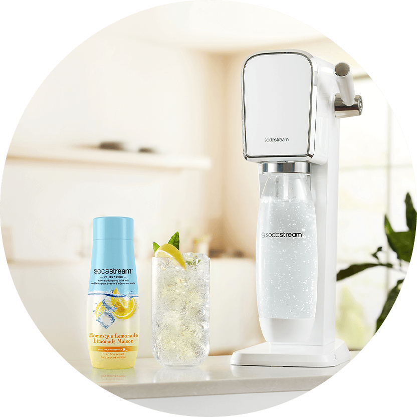

Syrop
SODASTREAM
SYROP CLOUDY
LEMONADE, 440 ML
Jesteś fanem klasycznej, domowej lemoniady? Jeśli tak, to z pewnością
zakochasz się w naszym syropie Cloudy Lemonade!
Niskokaloryczny syrop Cloudy Lemonade zawiera tylko naturalne barwniki
i pozwala zamienić zwykłą wodę z kranu w przepyszny, orzeźwiający
napój o cytrynowym smaku.
jedna sodastream
wiele możliwości
SMACZNIE I ZDROWO
Martwisz się o prawidłowe nawodnienie swojego organizmu, a nie przepadasz za zwykłą wodą? Za pomocą syropu Cloudy Lemonade w kilka sekund zamienisz zwykłą kranówkę w przepyszną, orzeźwiającą lemoniadę. Martwisz się o swoją dietę? Spokojnie! Napój Cloudy Lemonade nie zawiera sztucznych barwników oraz zawiera o połowę mniej kalorii niż klasyczne sklepowe napoje.
gazuj
miksuj
smakuj
Uwolnij swoją wyobraźnię i twórz kolorowe drinki w zaciszu swojego domu. Do nagazowanej wody dadaj syrop, a następnie swoje ulubione dodatki, np. kostki lodu, zioła, owoce lub miód. Delektuj się maksimum smaku i wytwarzaj minimum odpadów.
JEDNA SODASTREAM - WIELE MOŻLIWOŚCI
Spraw, aby każdy dzień smakował wyjątkowo dzięki syropom SodaStream!
Niezależnie od tego, czy lubisz klasyczne napoje, owocowe kompozycje
czy unikatowe połączenia smakowe, mamy
wszystko, czego
potrzebujesz. Wybieraj sprawdzone klasyki lub nasze oryginalne
kompozycje. Ciesz się różnorodnością, bezkonkurencyjnym smakiem i
przygotowuj napoje na miarę Twojego nastroju. Z SodaStream każdy dzień
może być pełen bąbelkowych doznań!

SPRAWDŹ NASZ PRZEPIS NA ORZEŹWIENIE
#PushForBetter